Nahir · eco H3
Fuentes nativas existentes. Alcance visual real, cámara y presupuesto compartido entre reflejos. No cambia el daño.
REVIEW_desktop_bosque.png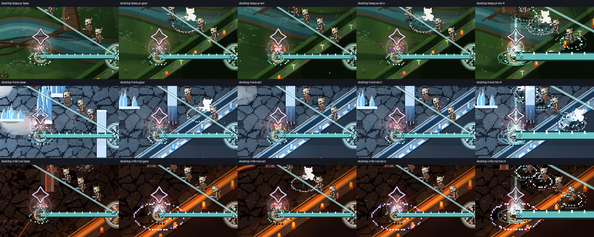
REVIEW_desktop_laberinto.png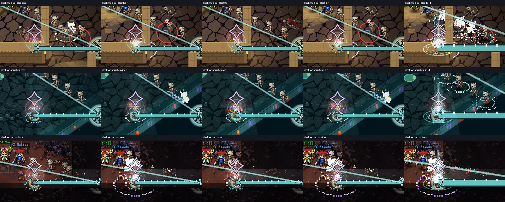
REVIEW_mobile_bosque.png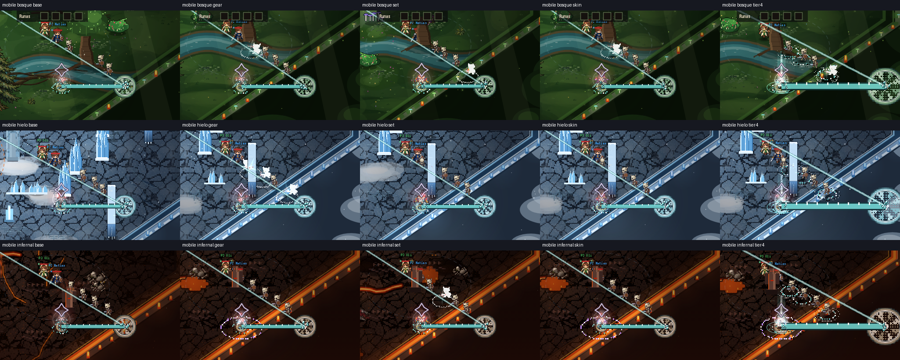
REVIEW_mobile_laberinto.png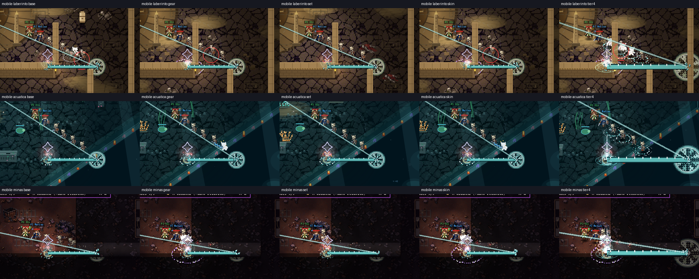
TEMPORAL_mobile_infernal.png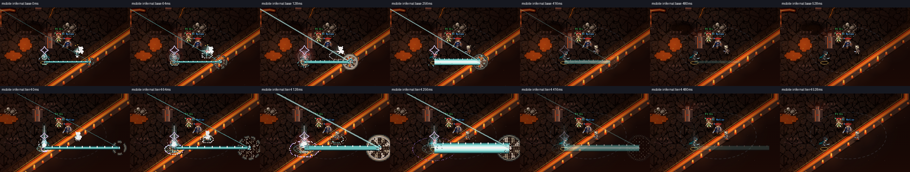
TEMPORAL_desktop_minas.png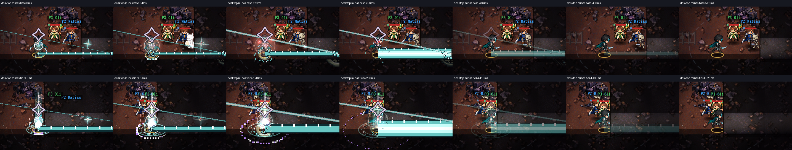
TEMPORAL_mobile_minas.png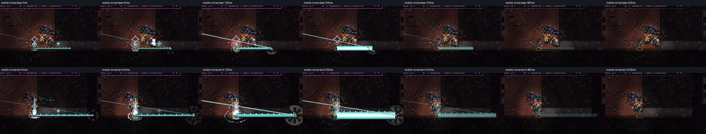
TEMPORAL_desktop_infernal.png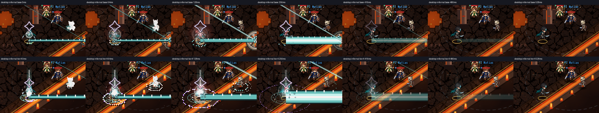
THREE_mobile.png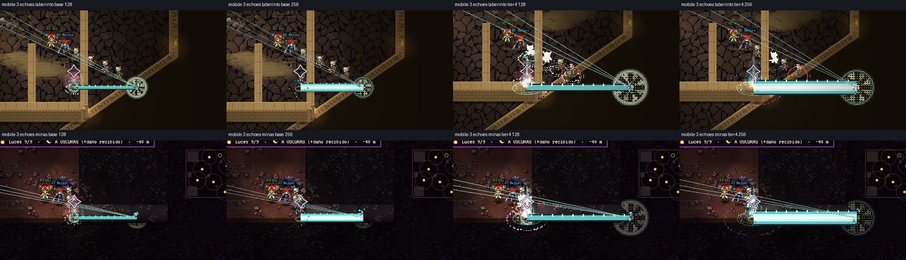
THREE_desktop.png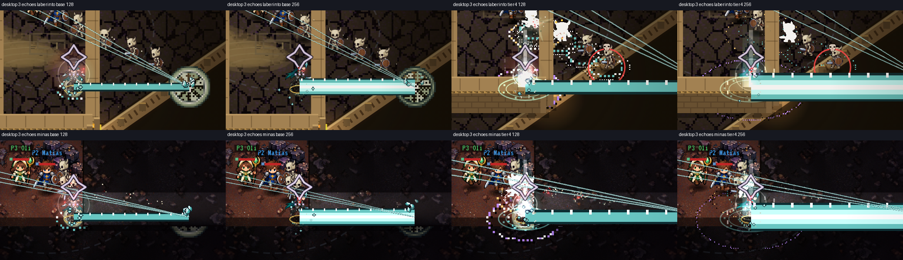
8 fases nativas existentes TRIPLE_desktop_bosque.png
TRIPLE_desktop_bosque.png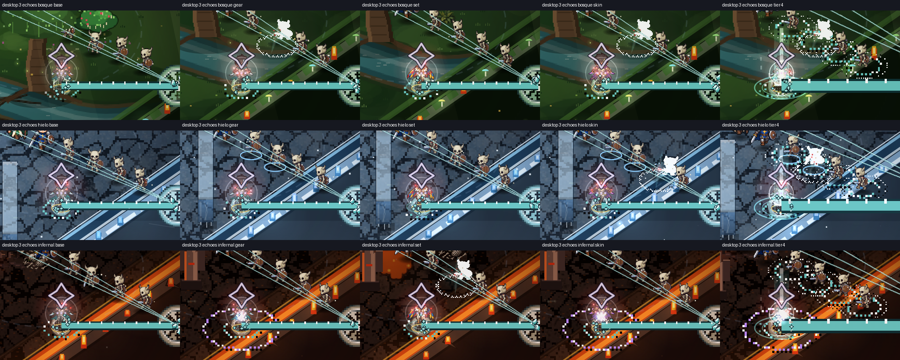
TRIPLE_desktop_laberinto.png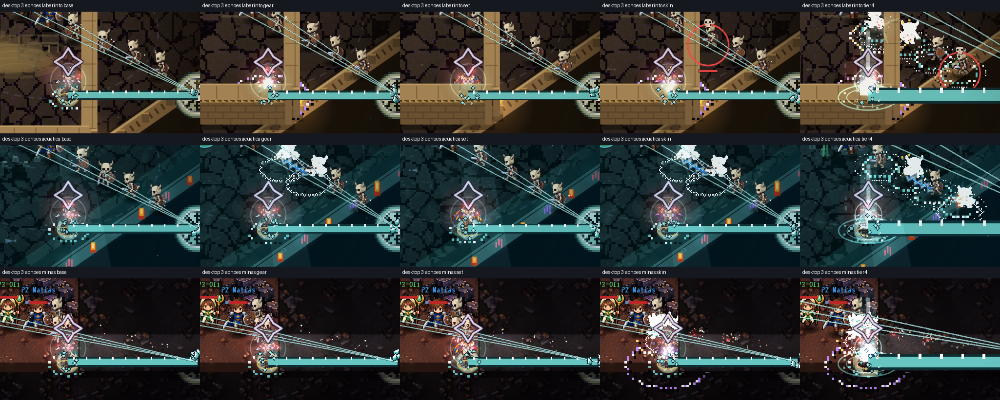
TRIPLE_mobile_bosque.png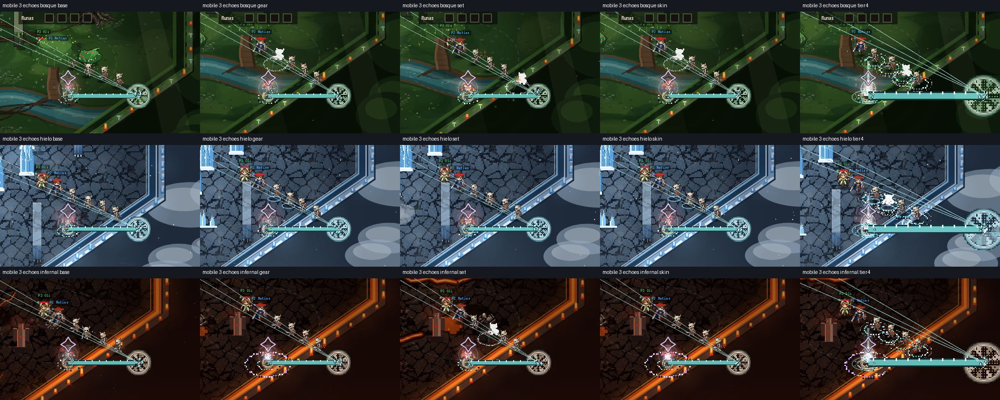
TRIPLE_mobile_laberinto.png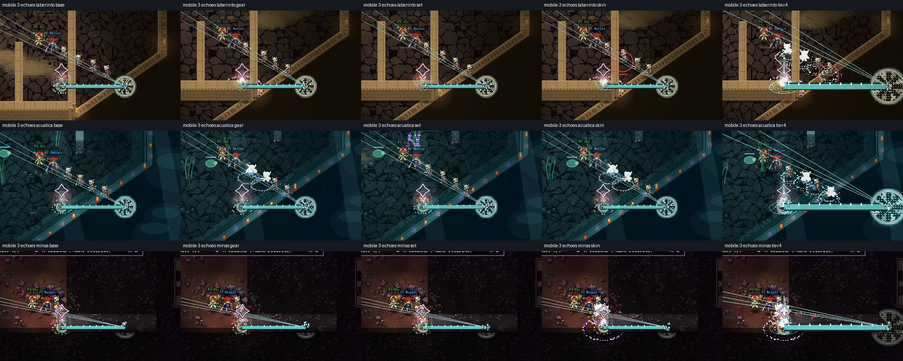